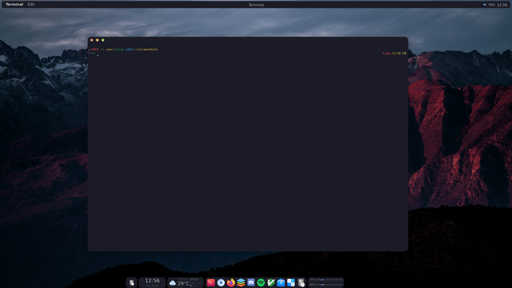
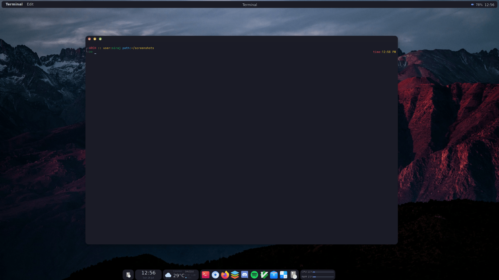

PlexyDesk New Dock
2024-02-26
The new PlexyDesk dock is now available in the latest build.
The dock is a core part of the PlexyDesk desktop shell, providing quick access to running applications, pinned shortcuts, and workspace switching. This update brings a cleaner layout, smoother animations, and better integration with the rest of the compositor.

The dock also adapts to the active system theme. Below is the same dock rendered with a light theme, showing how the styling adjusts colors and contrast while keeping the layout consistent.

What is new
- Redesigned dock layout with improved spacing and alignment
- Smoother animations powered by the GPU-accelerated compositor
- Better HiDPI rendering for crisp icons on high-resolution displays
- Pinned application shortcuts with drag-and-drop reordering
- Workspace switcher integration
- Improved input handling for both mouse and touch
How to try it
The new dock ships with the latest PlexyDesk build. You can build from source or grab the latest binary from the PlexyDesk GitHub organization.
Please report any issues or feedback on the GitHub repo so the dock can keep improving.